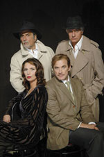

|  |
|
I 39 scalini
Tratto dall’avvincente giallo di John Buchan’s “I 39 scaliniI” è impresso nella memoria collettiva grazie al memorabile film di Alfred Hitchocock del 1935 .
Oggi tramutato in esilarante commedia teatrale, “I 39 scaliniI” continua la sua sensazionale tenuta a Londra nel West End. Niente è stato tagliato da questa divertentissima e spettacolare versione teatrale del più affascinante thriller britannico.
Con quattro attori che interpretano un minimo di 39 ruoli in 100 minuti di divertimento ingegnoso, ”I 39 scalini “ si rivela il tour de force teatrale più sorprendente ed esilarante dell’anno.
<< indietro |
|